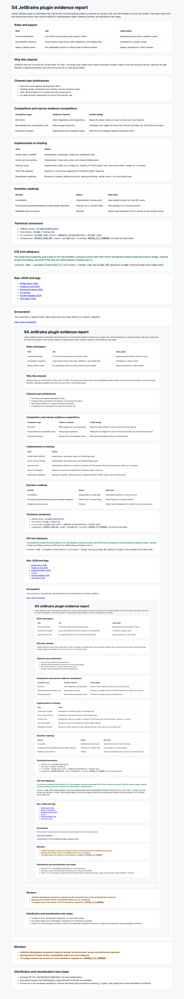

S4 JetBrains plugin evidence report
Ariada JetBrains plugin is a developer-IDE channel that runs the existing Ariada CLI scanner for a project URL and lists findings in an IDE tool window. This report starts with the channel description, then records market fit, implementation state, evidence, blockers, and distribution next steps.
Roles and payers
| Role | Job | Likely payer |
|---|---|---|
| Frontend developer | Find WCAG issues before pull request review. | Engineering team lead or platform owner. |
| Accessibility champion | Coach teams inside IntelliJ IDEA, WebStorm, and related IDEs. | Compliance or quality owner. |
| Agency delivery team | Run repeatable checks on client projects before handoff. | Agency operations or client retainer. |
Why this channel
JetBrains IDEs are a second IDE surface after VS Code. The plugin puts Ariada scans where developers already inspect code and local dev servers, reducing the gap between a failing accessibility scan and the source file or route being edited.
Channel user preferences
- Fast local scans against development URLs.
- Findings inside a persistent tool window, not only terminal output.
- Plain JSON artifacts for CI parity and later issue export.
- No SaaS account requirement for local OSS scanner use.
Competitors and narrow evidence competitors
| Competitor type | Evidence channel | Ariada wedge |
|---|---|---|
| IDE linters | Editor diagnostics and inspections. | Reuse the same Ariada CLI scan contract as CI and reports. |
| Browser/devtools accessibility tools | Manual page inspection. | Developer can trigger the scan from the IDE and keep raw JSON with the project. |
| Enterprise scanners | Dashboards and scheduled crawls. | Shift-left local feedback before scheduled scans. |
Implemented vs missing
| Area | Status |
|---|---|
| Gradle IntelliJ scaffold | Implemented: Java plugin, plugin.xml, buildPlugin task. |
| Action and tool window | Implemented: Tools menu action and Ariada findings panel. |
| Scanner reuse | Implemented: shells out to Ariada CLI, expects HTTP(S) project URL from environment, .ariada-url, or prompt. |
| Open-file mapping | Missing: no source-line mapping from finding to editor range yet. |
| Marketplace readiness | Blocked on founder JetBrains account, signing certificate, verifier matrix, icon and listing copy. |
Domains roadmap
| Domain | Status | Next step |
|---|---|---|
| Accessibility | Implemented in smoke path. | Keep default domain for local IDE scans. |
| Privacy/security/sustainability/structured data/AI readiness | Planned via CLI domain flags. | Add settings UI to choose domains. |
| Reliability and provenance | Planned. | Attach scan metadata and CLI version to tool-window result. |
Technical connectors
- JetBrains action:
Ariada.ScanProject. - Tool window:
Ariada/ Findings tab. - CLI connector:
ariada scan <url> --domains accessibility --format json. - Configuration:
ARIADA_SCAN_URL, project.ariada-url, or prompt;ARIADA_CLI_COMMANDoverrides the executable.
E2E test adequacy
The smoke test invoked the built Ariada CLI for rule metadata, scanned a known-bad HTML fixture through the existing Ariada IDE analyzer bridge, required at least one finding, and wrote HTML plus raw JSON evidence. Finding count: 6.
Command: node ../ariada-cli/dist/bin.js list-rules --format json && Ariada IDE analyzer bridge fixtures/bad-site/index.html
Raw JSON and logs
Screenshot
The screenshot is captured after report generation and linked directly for reviewer validation.
{kind=link}

Blockers
- JetBrains Marketplace submission requires founder account/vendor access and publication approval.
- Signing and full Plugin Verifier compatibility matrix are not configured.
- The plugin expects the Ariada CLI to be installed or supplied via
ARIADA_CLI_COMMAND.
Distribution and monetization next steps
- Package ZIP from
build/distributionsfor local install testing. - Add signed release once Marketplace credentials and certificate are available.
- Position as a free developer acquisition channel that feeds paid compliance reporting, CI gates, and organization-wide remediation workflows.